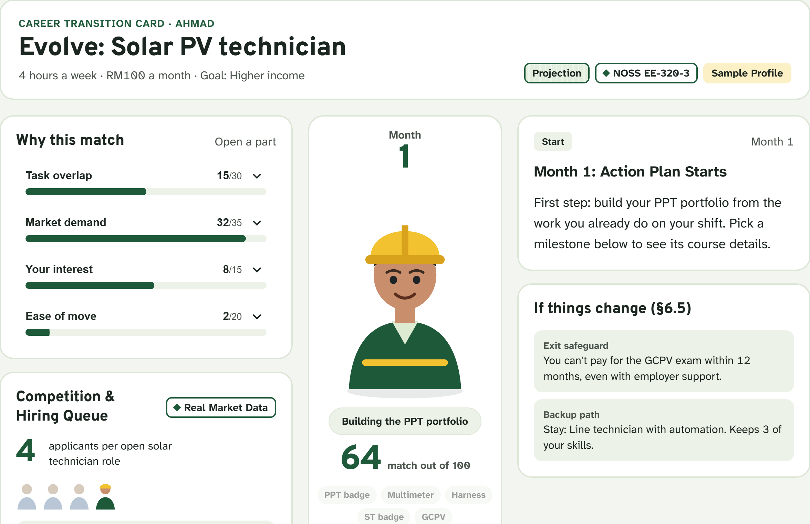

BijakMatch
Your trusted career advisor for TVET workers
Pitch deck
Same hands.
New work.
New work.
A career planner that reads a TVET worker's certificates and real daily tasks, then shows a clear, affordable next step.
Prepared by
KMJDIHATIKU
[Event name · date]


Working prototype